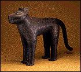
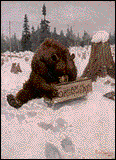

|
Curriculum Materials: Amazing Animals in Art Introduction to Amazing Animals  Throughout the ages, animals have been a source of fascination to humans. Whether loyal companions, fearsome foes, or means of sustenance, animals with their grace, vigor, beauty, and mystery have inspired people to create works of art. Indeed, in our earliest human records--cave paintings produced thousands of years ago--images of animals are depicted. The eight works of art in this set include images of animals from diverse cultures of the world and periods of history. Illustrating the strong and enduring connection between humans and animals are works such as a horse made for a Chinese tomb, a leopard made to symbolize an African ruler, and a bear created to promote an American product. The set explores the reasons why artists create images of animals, considering such motives as scientific investigation, religious beliefs, social customs, storytelling, advertising, and personal artistic expression. It also features a broad range of media, providing an opportunity to study techniques used in painting, printmaking, photography, sculpture, and ceramics. A vessel made from the red clay of ancient Peru offers an interesting contrast to the fine white porcelain used to make tea cups in 19th-century France. Finally, through the works in this set, students are invited to examine the wondrous qualities of animals that have engaged the skills and imaginations of artists throughout history.
| ||